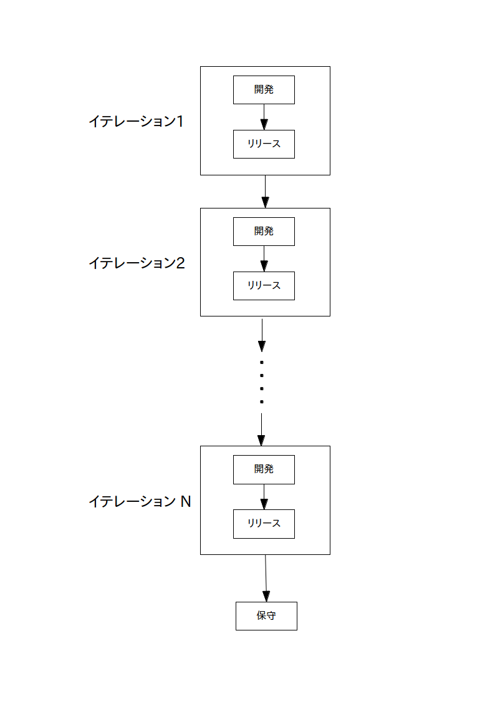
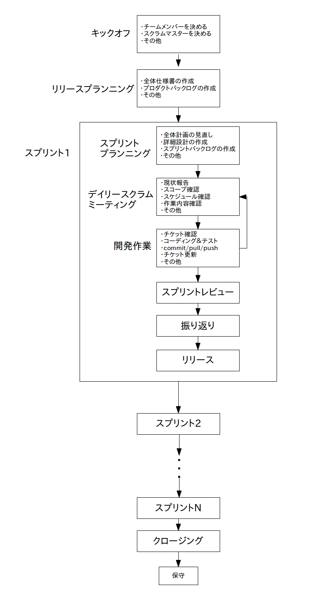

アジャイル開発
1. 概要
英語でアジャイル(agile)は「素早い」とか「迅速」という意味で、 アジャイル型ソフトウェア開発とは、その名の通り「ソフトウェアを迅速に開発して完動品をリリースするための開発手法」のことです。
アジャイル開発は反復型開発手法の一種であり、開発工程を「
イテレーション
」という短い(だいたい1〜4週間の)期間に区切り、各イテレーション毎に開発を繰り返します。
さらに開発するだけでなく、各イテレーションの終了時にソフトウェアのリリースも行います。
なお期間が短いのでベータ版くらいしか出せないと思うかもしれませんが、アジャイルではデバッグ済みの完動品を世に出します。
このようにアジャイルでは1〜4週間という短い期間の間に開発と完動品のリリースを何回も繰り返すことになりますので、 ウォーターフォールの様に最初に全ての仕様を決め、一気にコーディングし、一気にテストし、最後にリリース、なんてことをするのは不可能です。
ではどうするかというと、タスク(作業内容)の優先度を決めて
スコープ
(そのイテレーション内で作業する範囲)を作り、 スコープに含まれるタスクだけに絞って開発＆デバッグ＆リリースし、優先度の低い他のタスクは次以降のイテレーションにたらい回しします。またスコープを作成するとタスクを実行する時期と期間が決まりますので、同時にスケジュール管理をしていることにもなります。
たらい回しと書くとあまり良い印象を受けませんが、優先度を付けて必要なタスクから片付けることで、いつまでもグダグダと開発をし続けてリリースの目処も立たないみたいなリスクを避け、迅速な開発と完動品のリリースが可能になります。
またアジャイルは開発者間の意思疎通を重要視しています。
ちゃんと意思疎通が出来てないチームが迅速な開発を出来る訳が無いのでこれは当たり前ですね。
なお日本人がおちいりやすい完璧主義はアジャイル開発の最大の敵なので悔い改めましょう。
アジャイルの特徴・原則：
・ 迅速(agile)に開発する
・ 工程を1〜4週間のイテレーション(反復)に区切る
・ 各イテレーション毎に開発とリリースを繰り返す
・ ベータ版ではなくてデバッグ済みの完動品をリリースする
・ スコープ(作業範囲)をきっちり決めて優先度の高いタスクから実行する
・ スコープを守ることはスケジュール管理でもある
・ 開発者間の意思疎通を重要視する
・ 完璧主義は時間のムダ使いなので止める
2. 開発の流れ(プロセス)
理屈は分かったけどじゃあ具体的にアジャイルではどういう流れで開発するの？という疑問が出てきたと思います。
ウォーターフォールの時は要求定義→設計→実装→テスト→リリース→保守という流れがあったので大変分かりやすかったのですが、 実はアジャイルは最近(と言っても10年以上経ってますが)出来た手法であり、 ウォーターフォールのように開発の流れがきちんと体系化されているわけではありません。
逆に言えば上で書いた原則に従って開発してさえいれば「アジャイル」な開発手法になりますので、 メジャーな手法からマイナーな手法まで色んな手法が我こそは真のアジャイル開発だと群雄割拠している状態です。
という訳でここではいくつかの開発手法を順に示して行き、用語についてはその都度説明していきたいと思います。
(1) 基本モデル
まずアジャイルの基本的なモデルは下の図です。

概要で説明したように工程を複数のイテレーションに分け、各イテレーション内で開発とリリースを行い、 実行するタスクが無くなったら保守モードに移行します。
大まかな流れはこの通りなのですが、やっかいなのは具体的な開発の流れや内容についてはそのチームの裁量に任されていることです。
つまり、この基本モデルだけ示されてさあ開発しろと言われても、いったい何から手を付けて良いのかさっぱり分かりません。
(2) カウボーイコーディング
ではどうするか？
最初に思いつくのはリーダーすら置かず、チーム内の開発者がイテレーション内で各自パラバラ好きなように開発をおこなうことです。
ソースコードを適当に書いて行き(他の人が書いた箇所は黙って消すか上書き)、そこそこ動くようになったら、まあこれで良いやとリリースします。
このような手法を「
カウボーイコーディング
」と言います。
当然ですがそんなやり方ではまともなソフトウェアが出来る訳ありませんし、 そもそもアジャイルで重要視している「意思疎通」が欠如してますので、
カウボーイコーディングはアジャイル開発として認められていません
。
チーム内にエース級が一人いて全部自分でやろうとしたり、メンバー間の仲が悪かったりすると良くこの状況に陥りますので気をつけましょう。「意思疎通」が大事です。
(3) XP
カウボーイコーディングでは話にならないので、やっぱり先人の偉い人が考えたアジャイル開発手法を使うことにしましょう。
一番メジャーなアジャイル開発手法は「
XP(エクストリーム・プログラミング)
」です。
XPでは迅速な開発の役に立つ具体的なプラクティス（実践）がいくつか定義されています。
例えば
ペアプログラミング
・・・ 2人一組でプログラミングしましょう
リファクタリング
・・・ コードを随時改善していきましょう
などは皆さんも聞いたことがあると思いますが、これらはXPで定義されているプラクティスです(語尾が「〜ましょう」になっているのはXPがプラクティスだからです)。
他にも
テスト駆動開発、CI(継続的インテグレーション)
・・・ テストとビルドを自動化しましょう(後で詳しく説明します)
反復、短期リリース
・・・ 工程はイテレーション毎に分けて小まめにリリースしましょう
YAGNI
(You Aren't Going to Need It)・・・ちゃんとスコープを決めてしなくても良い余計な事をしないようにしましょう
など、色々役に立つプラクティスがXPに含まれています。
ならばXPを使って早速開発開始だと行きたい所ですが、実はまだ問題があって、
XPは「この問題を回避するにはこうしましょう」という解決方法は示してくれるのですが、 「こういう順番で開発をするとうまく行くよ」という具体的な開発の流れは示してくれない
のです。
つまりXPを導入したところで状況は(1)の基本モデルの時と変わらないので、 具体的にどう開発すれば良いのかはやはり自分らで考えないといけません。
(4) スクラム
カウボーイコーディングは話にならないけど、XPを使っても具体的にどうしたら良いのか良くわからん。でも 自分らで開発の流れを考えるのも面倒だ。
そういう場合は別のメジャーなアジャイル開発手法である「
スクラム
」を使うのも一つの手です。
スクラムはフレームワーク、つまり開発の流れを具体的に示してくれます。
ここではこのスクラムについて説明していきますが、スクラムはアジャイルの概念が出来る前からある開発手法ですので、一部の用語(スプリント＝イテレーションとか)がスクラムに独特な物になっていますので注意して下さい。
またXPとスクラムは同じアジャイル開発手法でも向いてる方向性が違います(XPはプラクティス、スクラムはフレームワーク)ので、 XPのプラクティスがスクラムに取り入れられる事もままあります。
前置きはこれくらいにして、少し縦長くて申し訳ないのですが、スクラムによる開発の流れを下の図に示します。
ちなみにスクラムにも色々な流儀やローカルルールがあるので、下の図はあくまで典型的なスクラムの流れであることに注意して下さい。

(4-1) キックオフミーティング
まず開発が始まったら
キックオフミーティング
(立ち上げ会議)でチームメンバーと
スクラムマスター
(管理者)を決めます。
キックオフでは記述書暫定版やプロジェクトスコープを作成する場合もあります。
スクラムマスター
はチームの管理者のことですが、全ての責任を持つ所謂リーダーとはちょっと違う存在です。
あくまで管理者であるスクラムマスターはチームがうまく回っているかどうかを管理することだけが仕事であり、 開発作業に対する責任はチームに属する全メンバーが等しく持ちます (とは言うものの、実際には話がまとまらない時はリーダー的強権を発動して無理矢理まとめたり、問題が起きたらマスターが責任を取らされることも多いのですが)。
(4-2) リリースプランニングミーティング
次に
リリースプランニングミーティング
(全体計画会議)を行って要求定義から
全体仕様書
及び
プロダクトバックログ
(全体的なタスクリスト)を作成します。
全体仕様書
は要求定義を元に作成した全体の大まかな仕様書で、この辺はウォーターフォールと同様です。
この全体仕様書は原始的に紙と鉛筆で作成する場合もあれば、 最初から電子ドキュメント化してクラウド上で
git の様なバージョン管理システム
を使って管理する場合もあります。
プロダクトバックログ
は開発する際に必要とされる全体の大まかな作業内容(タスク)の一覧(リスト)です。
全体仕様書を元にタスクをリストアップした後、重要度や難易度から優先順位をつけて、どのイテレーションでどのタスクをどの作業時間で実行するかという作業範囲(つまり
スコープ
)を決めていきます。
概要で書いたように、このスコープ作成作業はスケジュール管理も兼ねていますので大変重要な作業です。
よって
物理的に無理なタスクを無理矢理スコープに入れることは、スケジュールの遅れ、ひいてはリリース延期につながるので止めましょう
。
上で出てきたXPの
YAGNI
はこのことを戒めるプラクティスです。
なお、プロダクトバックログは原始的にホワイトボードなどを使ってそのタスクを手書き管理する場合もあれば、 もっと近代的にクラウド上で
redmine の様なチケット管理システム
を使ってタスクを管理する場合もあります。
またウォーターフォールと同様、
WBS
をパックログと一緒に作成してスケジュール管理に用いる事も多いです。
(4-3) スプリント
さてリリースプランニングで大まかな全体計画が出来たので、いよいよ
スプリント
に入ります。
スプリントはスクラムで使われるイテレーションの別名で全く同じ意味で使われています。
またスクラムではスプリント内も作業工程がいくつかに分かれています。
(4-3-1) スプリントプランニングミーティング
スプリントが始まったらまず
スプリントプランニングミーティング
(スプリント計画会議)を行って、
全体計画の見直し
(もしあれば)をし、
詳細仕様書
及び
スプリントバックログ
(スプリントで実行するタスクリスト)を作成します。
もし
全体計画に見直し
があれば、スプリントを開始する前のこの段階で全体仕様書とプロダクトバックログを更新しておきます (別にいつやっても良いのですがたいてい悲劇が待っています)。
詳細仕様書
はこのスプリントで開発する機能の詳細な仕様書です。
まず全体仕様書とプロダクトバックログからこのスプリントのスコープ(やる事や実装する機能、及び作業期間)を確認し、より詳細な要求定義を行い、詳細仕様書を作成します。
くれぐれもスコープから逸脱しないように気を付けて仕様書を作成して下さい(スコープ＝スケジュール管理からの逸脱はリリース延期につながります！)。
スプリントバックログ
はこのスプリントで実行する詳細なタスクリストで、プロダクトバックログと同様に優先度別にタスクをリストアップし、このスプリント内でのローカルなスコープを作成します。
また各タスクの担当者もこの時点で決めておきます。
(4-3-2) デイリースクラムミーティング
ここから通常の開発作業に入りますが、その日の開発を始める前に毎回チーム全員が集まって
デイリースクラムミーティング
(日次スクラム会議)を行います。
このミーティングでは
・ 現状報告
・
スコープを逸脱してる人がいないかの確認
・ スケジュールの確認
・ 当日の作業内容の確認
などを行います。それで、もしスコープを逸脱してる人がいた場合はリリース遅れにつながるのでマスターがやめさせます(どうしてもやりたいとほざく場合は次のスプリントでやらせます)。
逆に予定よりタスクが遅れているメンバーがいたら、進んでいるメンバーがXPの
ペアプログラミング
をしたり
プロジェクト内教育
を実施して遅れを取り戻します。
(4-3-3) 開発作業
ここから通常の
開発作業
に入ります。
作業内容は「チケットの確認、コーディング＆テスト、commit/pull/push、チケット更新」などですが、人によっては「マニュアル作成、イラスト作成、音楽作成」などが作業になることもあるでしょう。
さてスクラムではこの「コーディング＆テスト」作業において上で出てきたXPの
テスト駆動開発、CI(継続的インテグレーション)
を導入することが多いです。
テスト駆動開発は「テストコードを予め作っておいてデバッグ作業(正確には単体テスト)を自動化しましょう」というプラクティス、CIは 「ビルド(正確には結合テスト)作業を自動化してソフトウェアを常に動く状態に保ちましょう」というプラクティスです。
つまりコーディングとテスト(とビルド)作業を明確に分けているウォーターフォールと違い、
アジャイルではコーディングとテストとビルド作業を同時並行的に行います
。
通常はコーディングをするとテストとビルド作業を自動的にしてくれるシステムを使うのですが、原始的に手作業(つまり手動でテストして、pullしてビルドして正常動作を確認したらpush)でやる場合も何だかんだ言って多いです。
いずれにしろ、「
常にテストする
」ことと「
常に動く状態に保つ
」ことに気をつけ、
リモートリポジトリにソフトが動かなくなるようなコードをpushすることは絶対に避けましょう
。
(4-3-4) スプリントレビュー、振り返り、リリース
スプリントの終わりでは
スプリントレビュー
と
振り返り
を行います。
スプリントレビュー
ではチェックリスト等を活用して品質の確認を行います。もし致命的なバグを見つけたら修正して再レビューします。
最初に書いた通り各スプリントでリリースするのは完動品ですので、動かない代物をえいやとリリースするのは止めましょう(出来れば避けたい最終手段はリリース延期です)。
レビューが終わったら
振り返り
で反省点や次のスプリントで追加したい機能等を話し合ってドキュメントにまとめます。
その後
リリース
をしてスプリント終了です。
(4-4) クロージング、保守
この様なスプリントを何回か繰り返したら
クロージング
(全体の振り返り)を行なって開発終了となります。その後保守に入ります。